Different development tools and methods can be used to develop a website. The pages created using HTML, css and javascript are usually sent to the user by the server using one of the languages PHP, C# (ASP, .NET), Java (JSP / Servlet, JSF).
Today, there are various infrastructures to publish prepared web pages. The majority of these are prepared using PHP. So if you don't know PHP or you want to use a very strong language like Java, then your options will be reduced. There's something I can say to comfort you here. Java Basic Content Adviser ( JBCA ) infrastructure is a ready-made infrastructure that uses Java, HTML5, javascript, bootstrap, etc. technology.
In the remainder of this article, you will learn how to manage a website page by using the JBCA ( Java Basic Content Adviser ) infrastructure and sending pages to a guest by using the jsp/servlet.
To improve the web page, bootstrap will be a good option. If it is about page design, you can also get professional support from a graphic designer as you can do yourself. The generated html pages, javascript codes, styles and visual elements should be in the file.
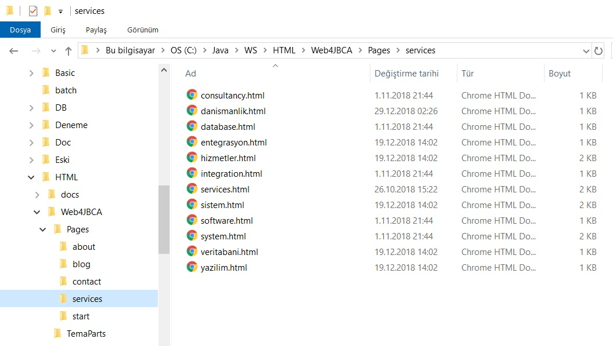
We save pages to the database with JBCA page management as an HTML file.
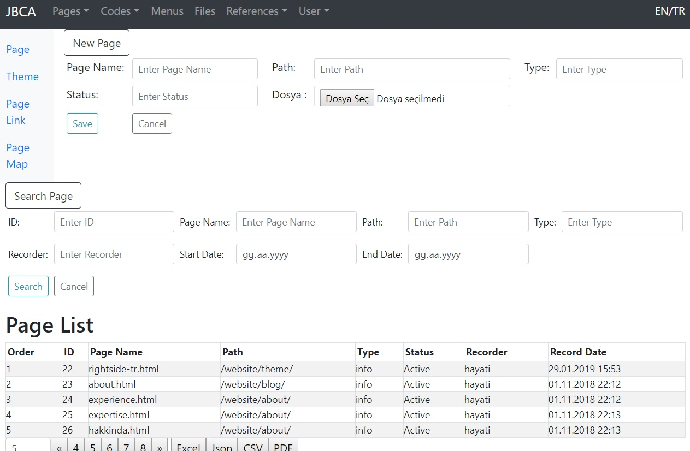
The themes help us determine the top, bottom menu and side sections of the page along with the main (center) section of the page. In this way, instead of making corrections on all pages, we make corrections on theme pieces.
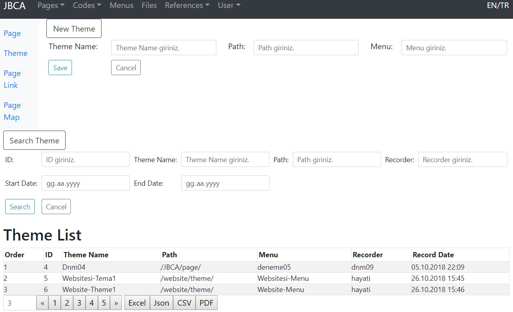
By creating the link record of the page, we can send the main part of the page together with the side sections via JSP.
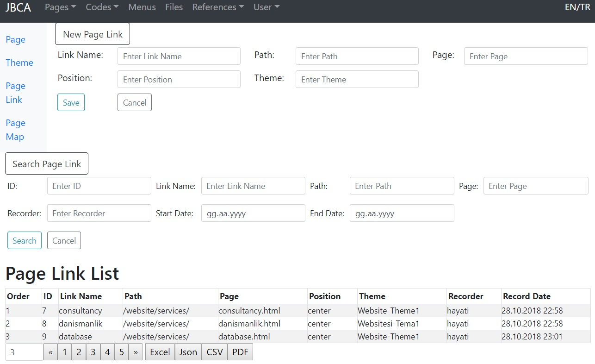
Pages associated with themes are determined by map.
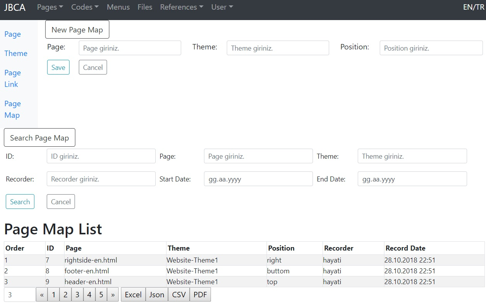
We also have separate pages for menus. The menu update can be done as html text. The menus can also be entered by page file entry. The menus depend on the main part with the theme.
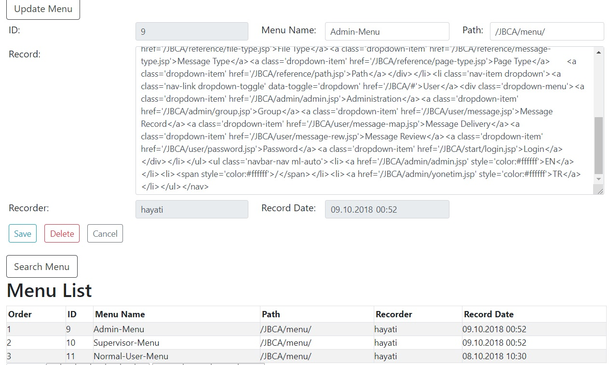
We have code screens where we can save browser side scripts such as CSS, Javascript etc.
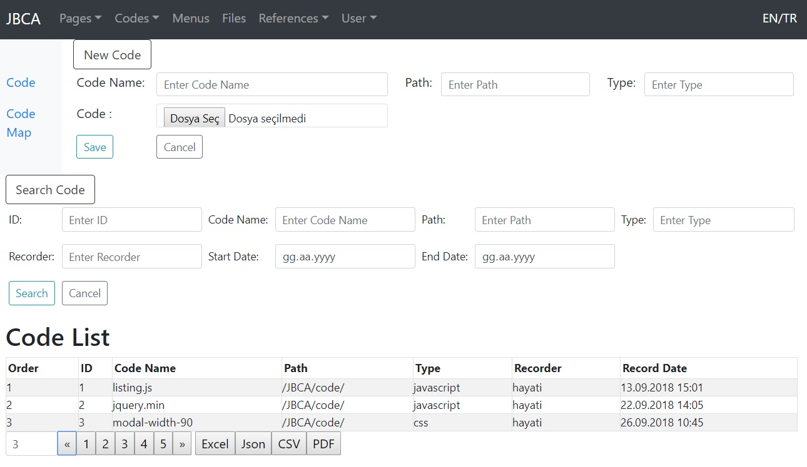
Binary files saved in the database can be re-recorded, downloaded and deleted.
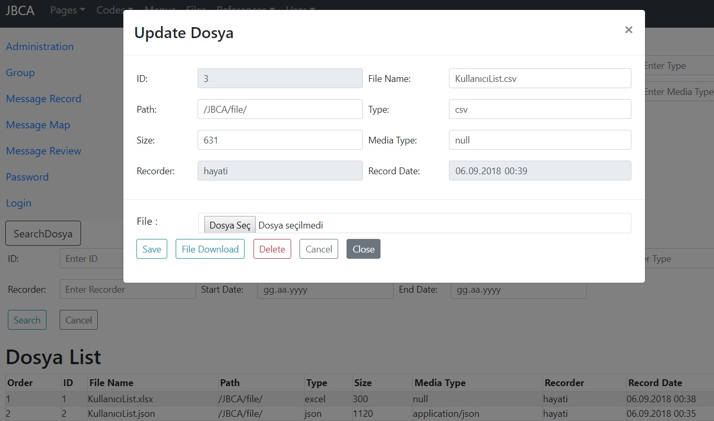
With the contact screen, we can list and display the contact messages sent from the website.
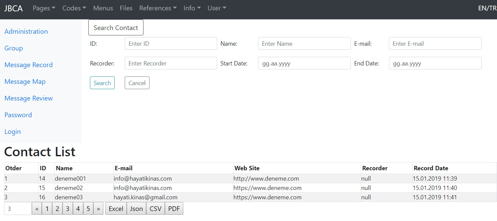
An overview of the project on Eclipse.
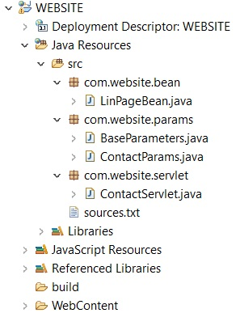
A section of JSP's in the WebContent folder.
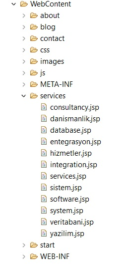
As an example, services.jsp page to combine the html parts and offer to the customer.
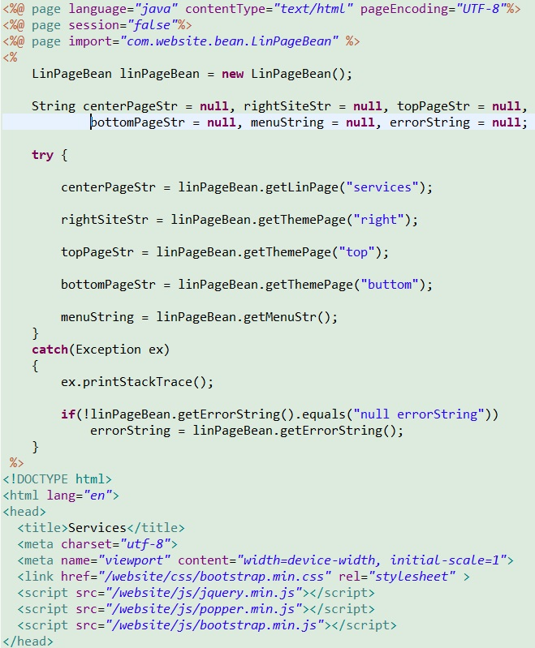
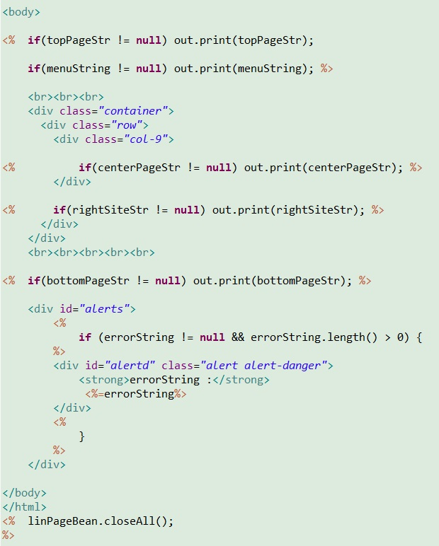
With LinPageBean we bring html and code fragments from the database for jsp page management.
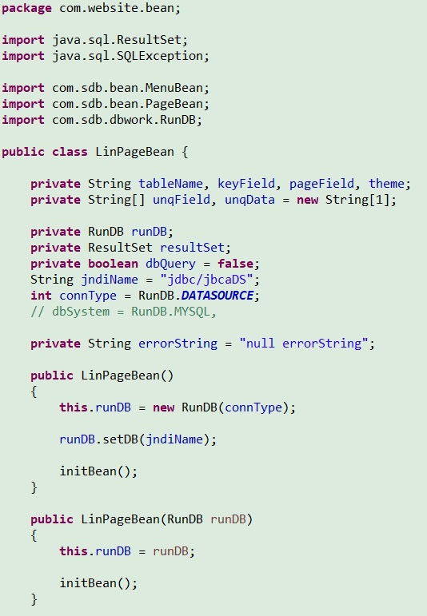
Initial values are determined, home page and theme information is obtained by getLinPage(String linkName) method.
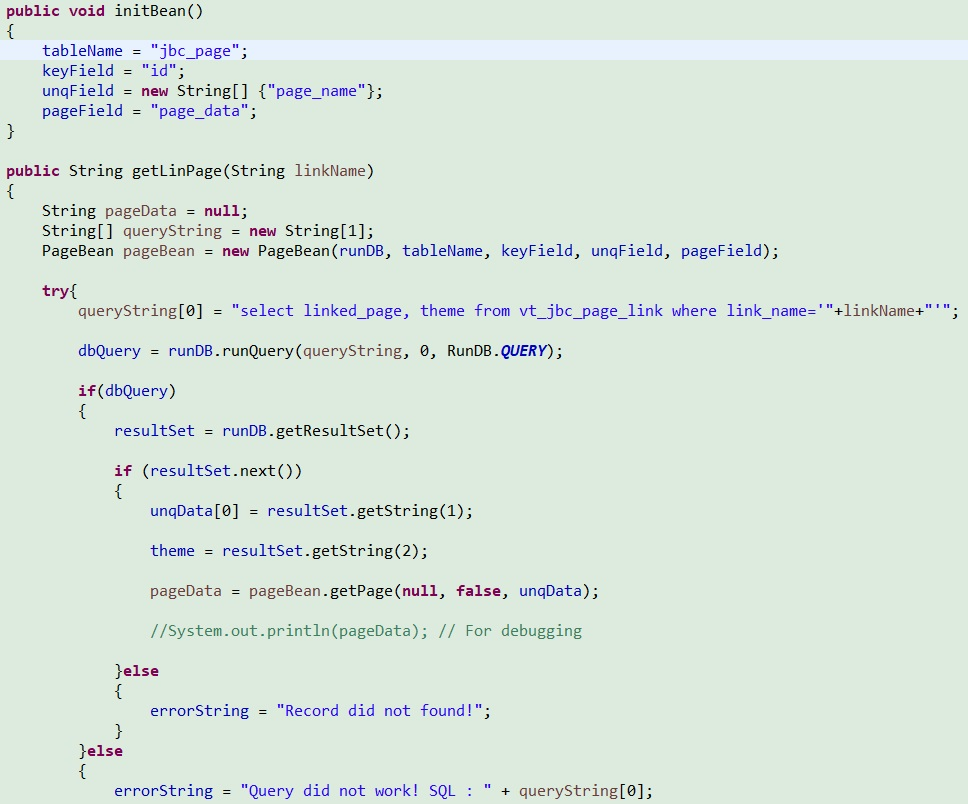
The linked html page sections are retrieved from the database by the getThemePage(String position) method.
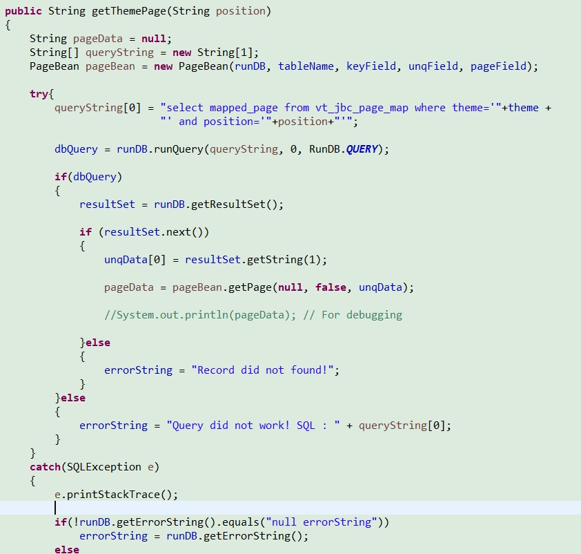
Taking the menu section is done by getMenuStr() method.
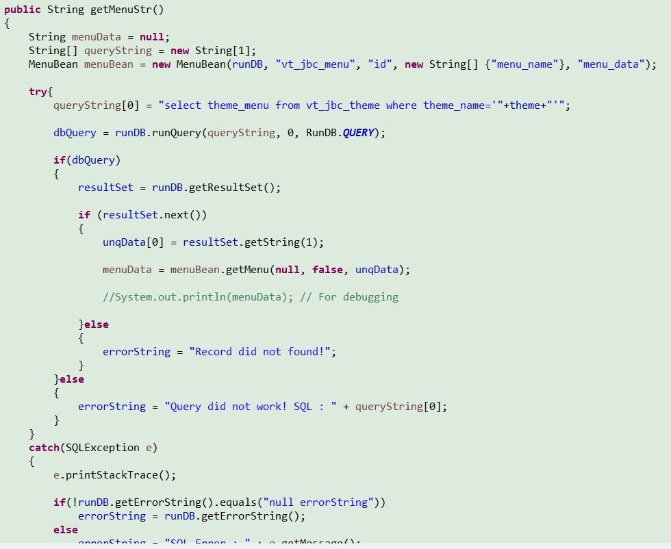
With the use of JBCA (Java Basic Content Adviser), a simple code structure and saved HTML page sections in the database, we can achieve a fast and reliable content management infrastructure.